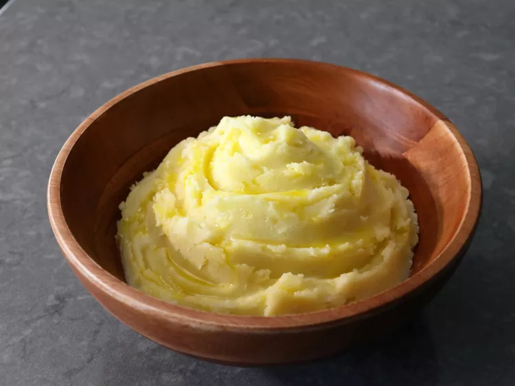

Home
Recipe for Jalapeno Popper Potatoes

Description :
These olive oil mashed potatoes are super simple to make. Taking advantage of the complex flavor of olive oil, they are surprisingly delicious. They also just happen to be vegan.
Both the ingredients and procedure are very simple and affordable
Hope you enjoy! Lets us know your feedback...
Ingredients :
- 3 pounds russet potatoes, peeled and quartered
- 2 tablespoons salt for boiling water, plus more to taste
- 2 garlic cloves, peeled and smashed
- 3/4 cup extra-virgin olive oil
Steps
- Add peeled and quartered potatoes to a sauce pan. Cover with cold water by at least 1 inch. Season with salt and garlic, and bring to a boil on medium-high heat.
- Reduce heat to medium-low and simmer gently until potatoes are very soft, about 25 minutes. Drain potatoes and add back into the pot or into a bowl.
- Use a potato masher to mash potatoes until very smooth. Switch to a whisk or electric hand mixer, and whip in the olive oil in two additions.
- Season to taste with salt; serve with more olive oil drizzled over the top if desired.